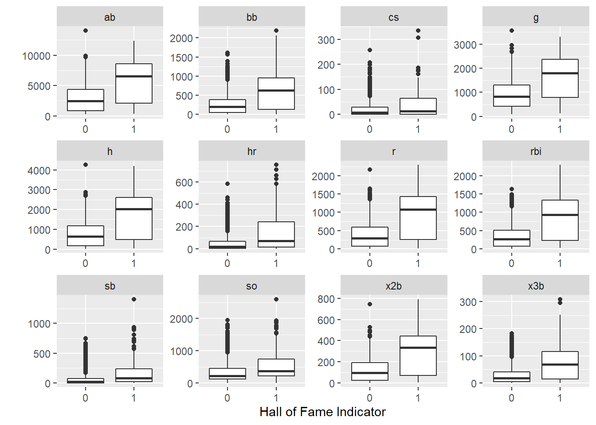
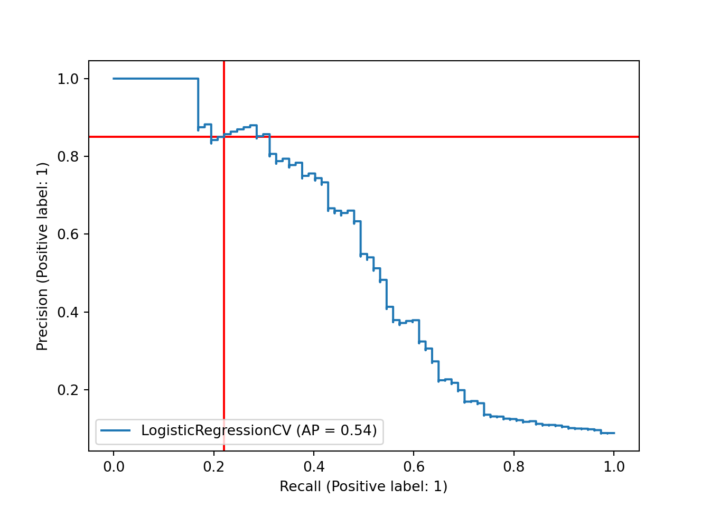
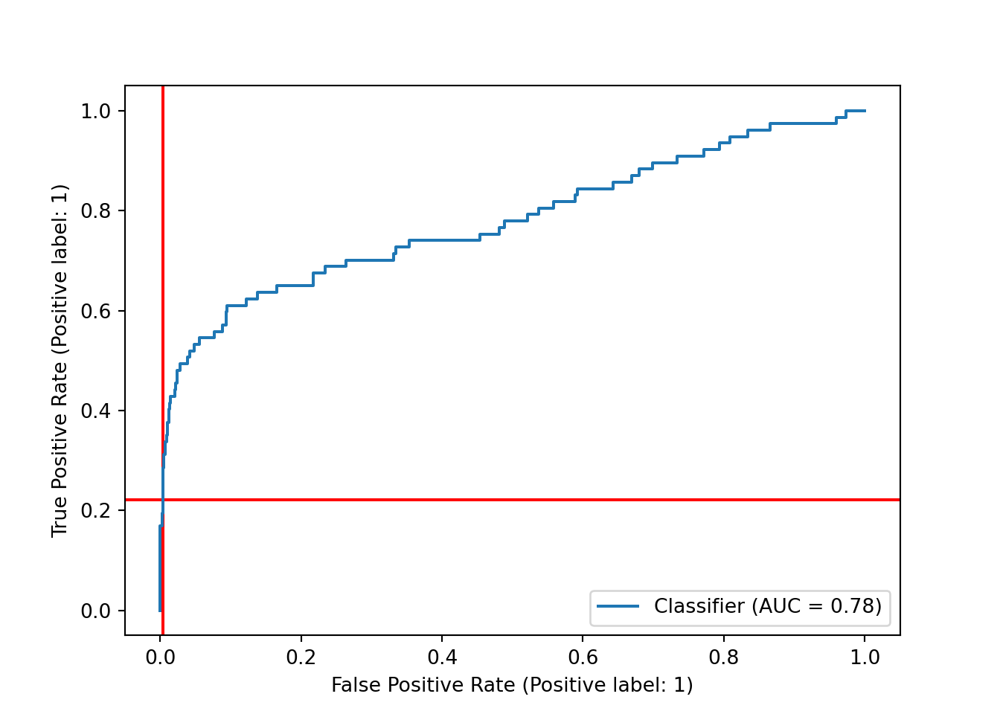
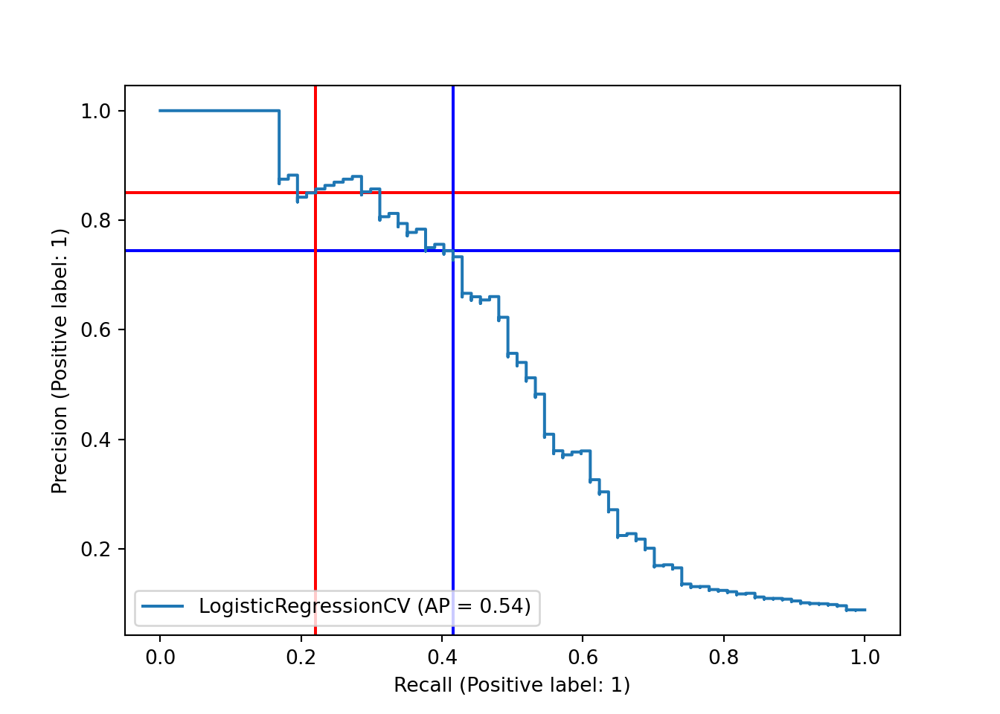
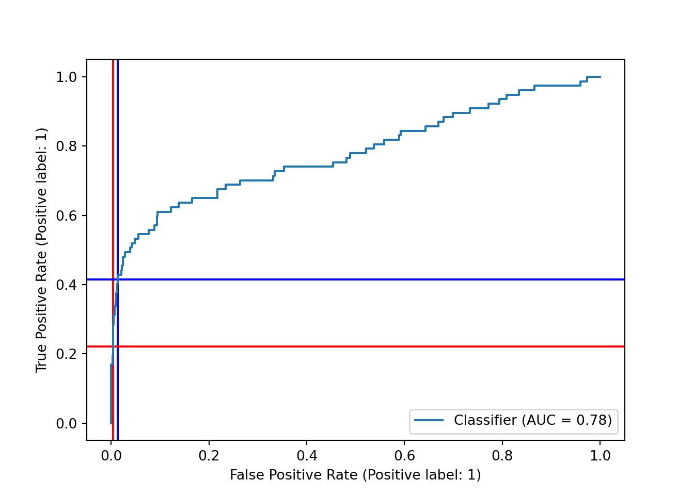
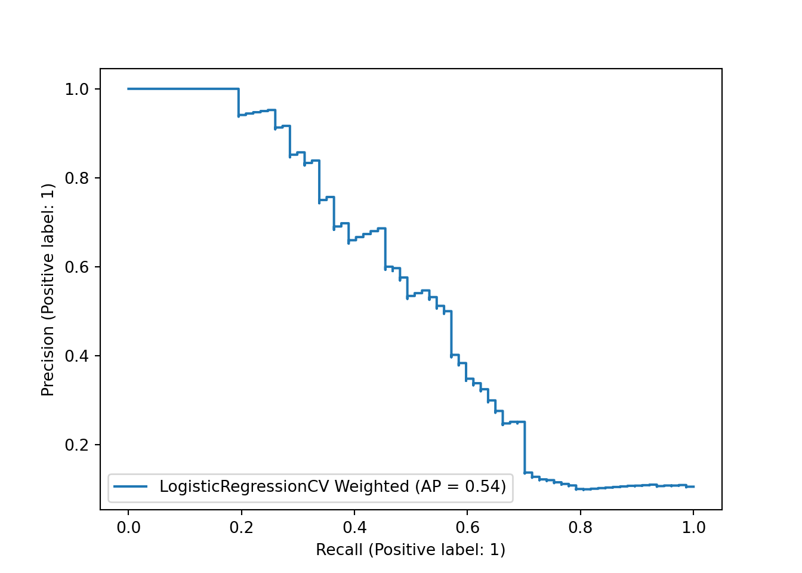

3 Modeling in Python with scikit-learn
3.1 scikit-learn Overview
Like {tidymodels}, scikit-learn offers a suite of tools for predictive modeling and machine learning: it will help you split data, preprocess model inputs, fit models, and compare and assess them.
Unlike {tidymodels}, scikit-learn is a single monolithic package with functions for the entire modeling pipeline. Users will likely still want to use the pandas library to ingest and prepare data, and may want to use other libraries to supplement scikit-learn’s data visualization capabilities, but scikit-learn will do most of the work by itself - and often with less and simpler code than tidymodels, at least for standard machine learning workflows.
3.1.1 scikit-learn Road Map
What we plan to do:
- Read in and explore data (pandas and R)
- Create model (scikit-learn)
- split data
- define pipeline with preprocessors and model with cross-validation for parameter tuning
- fit model
- Predict on new data and assess model (scikit-learn)
3.1.2 Modeling Goal
We plan to create a model using the historical data and use that model to predict who is most likely to make it into the Hall of Fame in the eligible data.
3.2 Explore Data
We’ll load the pandas library to import and set up the data.
import pandas as pdHere, we use panda’s read_csv() to import the data, and then we print the first few rows of the historical dataframe to the console.
historical = pd.read_csv('01_data/historical_baseball.csv').query("ab > 250")
eligible = pd.read_csv('01_data/eligible_baseball.csv').query("ab > 250")
historical## player_id inducted g ab r ... sb cs bb so last_year
## 0 aaronha01 1 3298 12364 2174 ... 240 73 1402 1383 1976
## 1 aaronto01 0 437 944 102 ... 9 8 86 145 1971
## 3 abbated01 0 855 3044 355 ... 142 0 289 16 1910
## 8 adairje01 0 1165 4019 378 ... 29 29 208 499 1970
## 9 adamsba01 0 482 1019 79 ... 1 1 53 177 1926
## ... ... ... ... ... ... ... ... .. ... ... ...
## 3227 zimmedo01 0 1095 3283 353 ... 45 25 246 678 1965
## 3228 zimmehe01 0 1456 5304 695 ... 175 33 242 404 1919
## 3230 ziskri01 0 1453 5144 681 ... 8 15 533 910 1983
## 3231 zitzmbi01 0 406 1004 197 ... 42 11 83 85 1929
## 3234 zuvelpa01 0 209 491 41 ... 2 0 34 50 1991
##
## [2664 rows x 15 columns]As a reminder, the historical data contains career statistics for every baseball batter from 1880-2011 who no longer meets Hall of Fame eligibility requirements or has already made the Hall of Fame, while the eligible data contains all players who are currently eligible for Hall of Fame induction.
You can see from the data below, the players who make the Hall of Fame tend to perform better in a few standard baseball statistics. This pandas code does the same thing as the R code in Chapter 2 - it groups the historical data by whether or not the player was inducted into the Hall of Fame, and then takes the mean of each column in each group.
hist_means_inducted_groups = historical.drop('last_year', axis = 1).groupby('inducted').mean().round()We can bring the data back into R, using RStudio’s very simple Python-R interface, and use the same R code as in Chapter 1 to print a table and produce boxplots of the means. We don’t need to do anything special to convert a pandas DataFrame to an R data frame: {reticulate} handles it for us when we call py$hist_means-inducted_groups.
py$hist_means_inducted_groups %>%
rownames_to_column(var = "inducted") %>%
gt::gt() ## renders the table | inducted | g | ab | r | h | x2b | x3b | hr | rbi | sb | cs | bb | so |
|---|---|---|---|---|---|---|---|---|---|---|---|---|
| 0 | 907 | 2849 | 374 | 751 | 122 | 28 | 50 | 336 | 60 | 20 | 264 | 325 |
| 1 | 1675 | 5941 | 958 | 1747 | 295 | 77 | 149 | 874 | 165 | 37 | 643 | 564 |
py$historical %>%
mutate(inducted = as_factor(inducted)) %>% # did this on data read in R but not python, so we do it here instead
pivot_longer(g:so) %>%
ggplot(aes(x = inducted, y = value)) +
geom_boxplot() +
facet_wrap(~name, scales = "free") +
labs(y = "",x = "Hall of Fame Indicator")
3.3 Split Data
As we did in R, we will split the data into a training set (two-thirds of the data) and testing set (one-third) of the data.
We set the seed so the analysis is reproducible - here, we do this using the random_state parameter in train_test_split().
Instead of an rsplit object that contains resampling metadata, train_test_split() returns four objects: x (predictor) pandas DataFrame objects for the training and test sets, and y (target) pandas Series objects for the training and test sets.
Note that before splitting the data, we set the index of the dataframe to be player_id. This carries through to the outputs of train_test_split(), which all have player_id as a common index (and not as a predictor or target variable.) In a way, this serves a similar purpose to the update_role(player_id, new_role = "ID") line that we added to the recipe in R.
from sklearn.model_selection import train_test_split
historical_pidindex = historical.set_index('player_id')
X = historical_pidindex.drop(['inducted', 'last_year'], axis = 1)
y = historical_pidindex.inducted
X_train, X_test, y_train, y_test = train_test_split(X, y, random_state=0, test_size = 1/3)3.4 Define a Pipeline
Scikit-learn’s “pipelines” serve the combined purpose of “workflows” and “recipes” in {tidymodels}. They allow you to define a set of preprocessing and modeling steps that you can then apply to any dataset. They are defined by the function make_pipeline(), with the steps, in order, as arguments.
The first two steps in our pipeline will take care of preprocessing. In Chapter 2, we centered and scaled our data; here, we’ll use StandardScaler(), which accomplishes both of those steps. We’ll also apply VarianceThreshold(); in its default form, this only removes zero-variance predictors, but the user can set a custom variance threshold. None of our predictors have low variance, so this feature selection mechanism does nothing to our data anyway.
The third step in our pipeline is our model. Here, we’ve chosen LogisticRegressionCV(). The first three parameters should produce a model very similar to the one in Chapter 2:
Cs = 10: the modeling function will automatically select a grid of 10 C values (inverse penalties) to search over. This is the default value. The user can also specify a specific list of C values to search over.
penalty = "elasticnet"lets us use a hybrid L1 and L2 penalty, or a mix between Lasso and Ridge regression, much likeengine = glmnetin R;
solver = "saga"chooses a solver that is compatible with our other options;
l1_ratios = [1.0]is the equivalent ofmixture = 1in R - it gives us a pure Lasso regression;
max_iter = 2000allows the solver to attempt up to 2,000 iterations as it searches for a solution, because the default of 100 was insufficient for this model specification;
We also have two parameters related to the cross-validation (CV) part of the model specification:
cv = 10. This means that the data will be split into 10 folds, and the model will be fit 10 times for each set of hyperparameters in an automatically generated search grid, with one fold being held out as a validation set for computing accuracy in each run. This process will allow the model to tune the size of penalty, which we have not specified explicitly.
refit = True: the function will find the best C (inverse penalty) value by averaging the cross-validation scores of each one, and then refit the model using the best C value on all of the data.
Finally, we set n_jobs = 4 to allow for multithreading. In my own highly unscientific testing, moving from one to four threads reduces model fit time from 15 seconds to 6 seconds.
from sklearn import preprocessing
from sklearn.linear_model import LogisticRegression
from sklearn.linear_model import LogisticRegressionCV
from sklearn.model_selection import train_test_split
from sklearn.pipeline import make_pipeline
from sklearn.preprocessing import StandardScaler
from sklearn.feature_selection import VarianceThreshold
pipe_scale_lr_lasso = make_pipeline(StandardScaler(), VarianceThreshold(), LogisticRegressionCV(Cs = 10, penalty = "elasticnet", solver = "saga", l1_ratios = [1.0], cv = 10, max_iter = 2000, n_jobs = 4))It is also possible to use a parameter tuning method more like the one in Chapter 2, using gridsearchCV and a predefined grid of search values The scikit-learn user guide has a very detailed section on this method, available at: https://scikit-learn.org/stable/modules/grid_search.html
3.5 Fit the Model (Using the Pipeline)
With our pipeline defined, fitting the model on the training data is very easy: we simply call the fit() method on the pipeline, with our X_train and y_train data as the inputs.
pipe_scale_lr_lasso.fit(X_train, y_train) # apply scaling on training data## Pipeline(steps=[('standardscaler', StandardScaler()),
## ('variancethreshold', VarianceThreshold()),
## ('logisticregressioncv',
## LogisticRegressionCV(cv=10, l1_ratios=[1.0], max_iter=2000,
## n_jobs=4, penalty='elasticnet',
## solver='saga'))])Because we used LogisticRegressionCV(), several of the steps we went through more carefully in Chapter 2 have been done for us:
- hyperparameter tuning was done, using an automatically-generated grid of 10 penalty values;
- the highest-accuracy C value was selected, using the mean scores across all cross-validation runs for each value;
- the model was refit using all of the data and the highest C value.
In some cases, it may be a better practice not to allow an algorithm to make all of these decisions automatically. It is, of course, possible to more precisely replicate the process shown in Chapter 1, by manually selecting a search grid for the penalty value, plotting, and evaluating each penalty value, and manually refitting on the training set. For instance, see here for an example of how to “balance model complexity and cross-validated score,” which, in this case, means finding a model with the least number of components from principal components analysis while maintaining a good-enough accuracy score.
3.6 Score and Evaluate the Model
3.6.1 Accuracy and Predictions
The most basic way to assess the performance of a fitted scikit-learn model is the score() function, with the test set as inputs. This uses the fitted model to predict on the test set and returns the proportion of correct predictions. Our model has nearly 93% accuracy, which sounds good, although we’ll dive a little deeper into the results below.
pipe_scale_lr_lasso.score(X_test, y_test)## 0.9290540540540541We can also get predictions using the predict() method, with our X_test DataFrame as the sole input.
y_pred = pipe_scale_lr_lasso.predict(X_test)3.6.2 Confusion Matrices and Unbalanced Classes
pred_series = pd.Series(y_pred)
counts = pred_series.value_counts()It looks like our model predicted that just 20 out of 888 players in the test set would be inducted into the Hall of Fame.
While we already know that our model was 94% accurate in the test set, it’s also useful to compare the predictions to the actual y_test values with a confusion matrix, especially in a classification problem like ours with just two classes - and even more so when the classes are highly unbalanced. In this situation, a predictive model can often score very well by simply predicting the more popular class (here, the negative result of zero or “not inducted into the Hall of Fame”) in nearly every case.
sklearn.metrics.confusion_matrix() will produce a confusion matrix as a numpy array; this is useful for further processing, but not especially easy to read.
import sklearn.metrics
cm_array = sklearn.metrics.confusion_matrix(y_test, y_pred)
print(cm_array)## [[808 3]
## [ 60 17]]tn = cm_array[0,0]
fn = cm_array[1, 0]
fp = cm_array[0, 1]
tp = cm_array[1, 1]Fortunately, scikit-learn will also generate a much prettier and easier-to-read confusion matrix, with the help of matplotlib.pyplot. As expected, our model seriously underpredicted Hall of Fame induction: we had just 3 false positives and 60 false negatives! With 17 true positives, this means that we correctly predicted less than 25% of the actual Hall of Fame inductees in the test set. This makes our model look quite a bit less useful than the accuracy figure alone might have led us to believe.
import matplotlib.pyplot as plt
sklearn.metrics.ConfusionMatrixDisplay.from_predictions(y_test, y_pred)## <sklearn.metrics._plot.confusion_matrix.ConfusionMatrixDisplay object at 0x000001864757DFA0>plt.show()
3.6.3 The Decision Boundary, Precision-Recall Curves, and Receiver Operating Characteristic (ROC) Curves
One possible way to better understand and/or ameliorate this issue is to look more closely at our decision boundary. By default, the decision boundary is 0.5: we predict whichever class our model says has a higher probability. However, we might want to lower this threshold, so that we predict the positive class (Hall of Fame induction) when the model says that a player has a reasonably high but less than 50% chance. This should return more true positives, but at the cost of having more false positives, as well. One way to assess this tradeoff is the precision-recall curve. Precision is the proportion of our positive predictions that were correct; ours was quite high, at 17/20 or 0.85. Recall is the proportion of actual positives that we predicted correctly; ours was quite poor, at 17/77 or 0.22. The precision-recall curve plots precision versus recall at different decision boundaries. Here, we’ll mark our current precision and recall, at the 0.5 decision boundary, with red lines.
y_score = pipe_scale_lr_lasso.decision_function(X_test)
sklearn.metrics.PrecisionRecallDisplay.from_predictions(y_test, y_score, name="LogisticRegressionCV")## <sklearn.metrics._plot.precision_recall_curve.PrecisionRecallDisplay object at 0x00000186459769A0>plt.axhline(y=tp/(tp + fp), color='r', linestyle='-', zorder = -10)
recall_score = sklearn.metrics.recall_score(y_test, y_pred)
plt.axvline(x = recall_score, color = 'r', linestyle = '-', zorder = -10)
plt.show()
This plot suggests that we have the option of shifting our decision boundary downward to trade precision for recall. Unfortunately, the tradeoff looks nearly linear - ideally, we would have found that we could gain a lot of recall while only losing a small amount of precision.
Another way to assess our choice of decision boundary, and the model’s performance at different boundaries, is the ROC curve, which plots the true positive rate (recall) and the false positive rate (the proportion of actual negatives that we predicted incorrectly.) We can plot the ROC curve using RocCurveDisplay from scikit-learn along with scores from decision_function() and the test set labels. Again, we add red lines to show the current decision boundary.
y_df = pipe_scale_lr_lasso.decision_function(X_test)
sklearn.metrics.RocCurveDisplay.from_predictions(y_test, y_df)## <sklearn.metrics._plot.roc_curve.RocCurveDisplay object at 0x00000186495A7FA0>plt.axhline(y = recall_score, color='r', linestyle='-', zorder = -10) # true positive rate
plt.axvline(x = fp/(fp+tn), color = 'r', linestyle = '-', zorder = -20) # false positive rate
plt.show()
As with the precision-recall curve, it seems that we could shift the decision boundary downward to get a higher true positive rate - and, in this case, it looks like our false positive rate would barely budge, thanks to the very large number of true negatives in the dataset that we would still be predicting correctly.
This plot also includes the area under the curve (AUC), often referred to as the AUROC for this curve. The AUROC is, of course, independent of our specific choice of decision boundary, and it is frequently used as a metric for assessing and comparing classification models.
Let’s shift the decision boundary down to 0.33 and see how it changes our results.
Caveat: tuning your decision boundary on test set predictions is generally a bad idea, because it can easily lead to overfitting to the test set. We’re doing it here for simplicity, but you’re better off dealing with unbalanced classes while training your model, and then assessing the trained models in the test set.
As expected, we added both true and false positives, with a much higher proportional increase in the number of false positives than true positives. This doesn’t sound great, but it might be worthwhile if we care much more about detecting actual Hall of Fame inductees than we do about making a few more wrong predictions.
probs = pd.DataFrame(pipe_scale_lr_lasso.predict_proba(X_test), columns = ['prob_zero', 'prob_one'])
preds_onethird = (probs['prob_one'] > 0.33).astype(int)
sklearn.metrics.ConfusionMatrixDisplay.from_predictions(y_test, preds_onethird)## <sklearn.metrics._plot.confusion_matrix.ConfusionMatrixDisplay object at 0x000001864A1F4D00>plt.show()
Let’s also see where this puts us on our precision-recall and ROC curves. Our new decision boundary will be marked in blue.
recall_onethird = sklearn.metrics.recall_score(y_test, preds_onethird)
cm_array_onethird = sklearn.metrics.confusion_matrix(y_test, preds_onethird)
tn_onethird = cm_array_onethird[0,0]
fn_onethird = cm_array_onethird[1, 0]
fp_onethird = cm_array_onethird[0, 1]
tp_onethird = cm_array_onethird[1, 1]
precision_onethird = tp_onethird/(tp_onethird + fp_onethird)
fpr_onethird = 1 - tn_onethird/(tn_onethird + fp_onethird)As expected, we moved to the right on the precision-recall curve, trading precision for recall.
## y_score = pipe_scale_lr_lasso.decision_function(X_test)
sklearn.metrics.PrecisionRecallDisplay.from_predictions(y_test, y_score, name="LogisticRegressionCV")## <sklearn.metrics._plot.precision_recall_curve.PrecisionRecallDisplay object at 0x000001863B90E190>plt.axhline(y=tp/(tp + fp), color='r', linestyle='-', zorder = -10)
plt.axhline(y=precision_onethird, color='blue', linestyle='-', zorder = -10)
recall_score = sklearn.metrics.recall_score(y_test, y_pred)
plt.axvline(x = recall_score, color = 'r', linestyle = '-', zorder = -10)
plt.axvline(x = recall_onethird, color = 'blue', linestyle = '-', zorder = -10)
plt.show()
We also moved to the right on the ROC curve, but just barely! Our true positive rate increased quite a bit more than our false positive rate. Which of these plots and scores we care most about depends on the problem we’re trying to solve and our sensitivity to false positives and negatives.
y_df = pipe_scale_lr_lasso.decision_function(X_test)
sklearn.metrics.RocCurveDisplay.from_predictions(y_test, y_df)## <sklearn.metrics._plot.roc_curve.RocCurveDisplay object at 0x000001863B3C2EE0>plt.axhline(y = recall_score, color='r', linestyle='-', zorder = -10) # true positive rate
plt.axhline(y = recall_onethird, color='blue', linestyle='-', zorder = -10) # true positive rate
plt.axvline(x = fp/(fp+tn), color = 'r', linestyle = '-', zorder = -20) # false positive rate
plt.axvline(x = fpr_onethird, color = 'blue', linestyle = '-', zorder = -20)
plt.show()
3.6.4 Class Weights
If we want to avoid tuning the decision boundary directly, another option is to use the class_weights parameter found in many classifiers in scikit-learn. This allows us to increase the penalty for misclassifying the higher-weighted class (here, the less-frequent “inducted into Hall of Fame” class) while fitting the model. There is a “balanced” option for class weights that attempts to fully balance classes by setting class weights inversely proportional to class proportions; unfortunately, our classes are so unbalanced that this method doesn’t work on this dataset. Instead, we weight the “positive” class at four times the weight of the “negative” class.
pipe_scale_lr_lasso_weighted = make_pipeline(StandardScaler(), VarianceThreshold(), LogisticRegressionCV(Cs = 10, penalty = "elasticnet", solver = "saga", l1_ratios = [1.0], cv = 10, max_iter = 3000, n_jobs = 4, class_weight = {0: 0.2, 1: 0.8}))
pipe_scale_lr_lasso_weighted.fit(X_train, y_train)## Pipeline(steps=[('standardscaler', StandardScaler()),
## ('variancethreshold', VarianceThreshold()),
## ('logisticregressioncv',
## LogisticRegressionCV(class_weight={0: 0.2, 1: 0.8}, cv=10,
## l1_ratios=[1.0], max_iter=3000, n_jobs=4,
## penalty='elasticnet', solver='saga'))])This produces a very small improvement in accuracy.
weighted_accuracy = pipe_scale_lr_lasso_weighted.score(X_test, y_test)
print("Weighted accuracy: ", weighted_accuracy.round(4))## Weighted accuracy: 0.9347print("Improvement: ", (weighted_accuracy - pipe_scale_lr_lasso.score(X_test, y_test)).round(4))## Improvement: 0.0056The difference in the confusion matrix, however, is much more noticeable: our recall is up to 0.45, although our precision has decreased as the number of false positives grows.
y_pred_weighted = pipe_scale_lr_lasso_weighted.predict(X_test)
sklearn.metrics.ConfusionMatrixDisplay.from_predictions(y_test, y_pred_weighted)## <sklearn.metrics._plot.confusion_matrix.ConfusionMatrixDisplay object at 0x000001863B3E8940>plt.show()
Our ROC curve looks fairly similar, and our AUC remained the same.
y_df_weighted = pipe_scale_lr_lasso_weighted.decision_function(X_test)
sklearn.metrics.RocCurveDisplay.from_predictions(y_test, y_df_weighted)## <sklearn.metrics._plot.roc_curve.RocCurveDisplay object at 0x000001863B78F100>plt.show()
Similarly, our precision-recall curve is fairly similar, with no change in average precision.
sklearn.metrics.PrecisionRecallDisplay.from_predictions(y_test, y_df_weighted, name="LogisticRegressionCV Weighted")## <sklearn.metrics._plot.precision_recall_curve.PrecisionRecallDisplay object at 0x000001863B785D30>plt.show()
If our model accuracy metrics didn’t even change, should we have even bothered with class weights? The answer is that it depends on the problem we’re trying to solve.
While the baseball example we used here is clearly not relevant our work, classification problems absolutely do show up in military applications of predictive modeling and machine learning, and unbalanced classes are fairly common: for example, computer vision algorithms used to detect features such as military vehicles in satellite imagery. In many such cases, analyts do not blindly trust computer models to detect the features of interest or to make decisions about what to do in response to a feature being detected. Instead, they are used to focus human experts on a smaller subset of cases where the algorithm has signalled that there is a high probability that there is something worth looking at. In such a case, false negatives are typically a much larger issue than false positives: we want the algorithm to flag as many of the true positives as possible, even if it also produces a moderate amount of false positives that human experts have to sift through. As long as it eliminates a large number of true negatives, it still saves humans time and effort, allowing them to work more efficiently.
3.7 Try Another Method: Random Forest
Like tidymodels, scikit-learn makes it easy to substitute another modeling method in place of logistic regression. Here, we insert a random forest classifier, using all default values.
from sklearn.ensemble import RandomForestClassifier
pipe_scale_randomforest = make_pipeline(StandardScaler(), VarianceThreshold(), RandomForestClassifier())
pipe_scale_randomforest.fit(X_train, y_train)## Pipeline(steps=[('standardscaler', StandardScaler()),
## ('variancethreshold', VarianceThreshold()),
## ('randomforestclassifier', RandomForestClassifier())])pipe_scale_randomforest.score(X_test, y_test)## 0.9403153153153153It looks like the random forest, with zero customization, produces a higher accuracy than either of our lasso logistic regression models.
The confusion matrix below shows that the random forest is clearly better than the unweighted logistic regression model, with substantially more true positives and just one more false positive. However, it still had lower recall than our class-weighted logistic regression, suggesting that it might need further tuning if we care primarily about missing as few actual positive values as possible.
y_pred_rf = pipe_scale_randomforest.predict(X_test)
sklearn.metrics.ConfusionMatrixDisplay.from_predictions(y_test, y_pred_rf)## <sklearn.metrics._plot.confusion_matrix.ConfusionMatrixDisplay object at 0x000001863B7D6460>plt.show()
3.8 Predict on Eligible Data
As we did in R, let’s make predictions on the eligible dataset, using our class-weighted model.
eligible = eligible.set_index("player_id")
eligible_preds = pipe_scale_lr_lasso_weighted.predict_proba(eligible.drop('last_year', axis = 1)).round(3)
df_eligible_preds = pd.DataFrame(eligible_preds, columns = ['pred_0', 'pred_1']).set_index(eligible.index)
elig_joined = eligible.join(df_eligible_preds).sort_values("pred_1", ascending = False).reset_index().query("pred_1 > .4")py$elig_joined %>%
select(player_id, pred_1, pred_0, everything()) %>%
DT::datatable()3.9 Conclusion
For most predictive modeling tasks - especially if you are not trying to use any cutting-edge methods or dealing with very large datasets - there is no clear winner between R’s tidymodels or Python’s scikit-learn. They both support a very wide range of machine learning methods and make it relatively easy to optimize hyperparameters, evaluate model performance, and compare model specifications. There are differences in their user interfaces and in the ways that analysts construct modeling pipelines, but which one makes more sense to each user will likely come down to personal preference and familiarity with the language.
While building this tutorial, however, one noticeable advantage for scikit-learn did become clear: it has a very extensive and detailed user guide, full of easy-to-follow examples, arguably making it easier to learn. The tidymodels framework may close this gap over time, but the wealth of existing scikit-learn documentation and the fact that the R predictive modeling landscape is relatively fragmented and has not fully coalesced around tidymodels could slow that down.